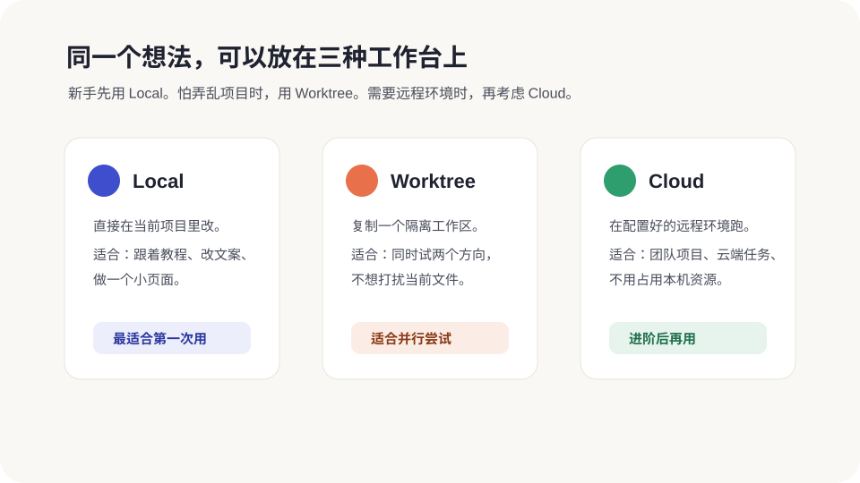

项目、线程和三种模式
这一章解决一个最容易懵的问题:Codex App 里到底什么是项目,什么是线程,Local / Worktree / Cloud 又该怎么选。你不需要懂 Git,先把它们当成三种“工作台”。

项目:把相关资料放在一起
新版 Projects 页面会把两类项目放在一起:ChatGPT 项目可以保存上传文件、项目说明和连接来源;本地项目则连接你电脑里的一个或多个文件夹。做代码时,你最常用的是本地项目。
新手要记住:项目范围越清楚,Codex 越不容易跑偏。不要一上来把整个桌面、整个下载目录都交给它。
多文件夹项目:主次要分清
从 2026 年 7 月更新开始,一个本地项目可以加入多个相关文件夹。打开项目菜单里的 Edit project,用 Add folder 添加目录,再用 Make primary 指定主文件夹。
- 主文件夹:新任务默认从这里开始,Git、PR、Worktree 以它为主,并自动发现这里的
AGENTS.md、Skills 和config.toml。 - 辅助文件夹:Codex 可以搜索、读取和编辑,但不会自动发现里面的项目配置。
例如把官网仓库设为主文件夹,把产品说明设为辅助文件夹。两套完全无关的项目不要放一起。完整操作和安全边界见 A9 · 语音与多文件夹项目。
Task / 线程:一次任务对话
官方界面现在更常写 Task,技术说明里也会看到 thread。对新手来说,都可以理解成“一张独立任务单”。一个项目里可以开很多任务:
- 一条线程专门改首页。
- 一条线程专门检查移动端。
- 一条线程专门整理 README。
这样做的好处是,每条线都更清楚。以后你可以搜索旧任务,也可以把重要任务 pin 住,不用在一大坨聊天里翻。快速问一句、不需要项目上下文时,可以用 Quick Chat。
一条线程从开始到结束
把线程当成一张任务单。最稳的生命周期是:
- 开头说范围。例如“只检查首页,先不要改文件”。
- 中间小步推进。每次只让 Codex 做一个明确动作。
- 改完看 Review。确认文件、Diff、运行结果都符合预期。
- 结束时总结。让它说清改了什么、怎么验证、还有什么没做。
- 归档或保留。重要线程 pin 住,普通线程完成后归档,以后列表不会乱。
如果一个线程已经聊得很长、方向变了,就开新线程。新线程不是浪费,它能让 Codex 少背旧上下文。
分享线程:给别人看过程,不是开放电脑
macOS 桌面端可以把本地 Codex 线程生成一份静态只读快照。在线程里点 Share,或在支持的位置输入 /share,选择访问范围,再复制链接。它不会让别人进入你的项目或操作电脑,原线程后续变化也不会自动更新到旧快照。
分享前一定打开链接自己检查。快照可能包含消息、推理摘要、图片、文件路径和 Diff;即使系统会遮盖已知密钥格式,也可能留下其他敏感信息。个人账号的链接可能被任何拿到链接的人打开,工作区账号则按工作区成员和你选择的范围限制访问。桌面端与 iOS 的置顶线程现在也会保持同步。
三种模式怎么选
| 模式 | 一句话理解 | 新手建议 |
|---|---|---|
| Local | 直接在当前项目里工作 | 第一次用就选它。改完马上能看到文件变化。 |
| Worktree | 创建一个隔离副本,让 Codex 在副本里试 | 当你怕弄乱当前项目,或想同时试两个方案时再用。 |
| Cloud | 在远程配置好的环境里跑 | 先不用急。等你有团队项目或云端环境再学。 |
这里说的 Local / Worktree / Cloud 是 Codex 怎么接触项目文件;Chat / Work / Codex 则是 你选择哪种工作入口。两组概念不是一回事,完整选择方法见 A8。
三个生活化例子
Local:修一个错字
比如首页标题错了一个字,直接 Local 改。小、明确、容易验收。
Worktree:试新版首页
你想让 Codex 大改视觉风格,但不确定喜欢不喜欢,就放到 Worktree 试。
Cloud:远程跑长任务
团队项目、GitHub 仓库、云端环境配置好后,可以把耗时任务放到 Cloud。
Worktree 是什么
Worktree 可以理解成“给 Codex 开一张临时工作桌”。它会基于你的项目创建一个隔离工作区。Codex 在那里改,不会直接打扰你正在看的那份文件。
适合这些情况:
- 你想让 Codex 大胆试一个新设计,但怕改坏。
- 你想让两个线程同时做不同任务。
- 你想先看结果,满意了再把工作交回 Local。
如果你看到 Hand off,可以把线程在 Local 和 Worktree 之间移动。你不用理解背后的 Git 操作,只要记住:这是“把活从一张桌子搬到另一张桌子”。
Worktree 还有几个小细节
Worktree 背后用的是 Git,但零基础读者不用先学一整套 Git 概念。你先记住这几个实际影响:
- 它更适合大改动。比如改整站视觉、重做一个页面、同时比较两个方案。
- 它适合后台任务。自动化或长任务在 Worktree 里跑,不容易撞到你正在看的 Local 文件。
- 它不是永久垃圾桶。App 会管理自己创建的 Worktree,旧的可能被清理;重要成果要合并、提交或手动保留。
- 被 Git 忽略的本地文件不一定会带过去。如果某个忽略文件在 Worktree 里也必须存在,可以让 Codex 解释并配置
.worktreeinclude。
新手最省心的说法是:“请用 Worktree 做这个实验,做完先给我看结果和 Diff,不要自动合并。”
Handoff:把活搬回当前项目
Worktree 里做完一版后,你通常有两个选择:
- 继续在 Worktree 里验收。适合它能自己启动、测试、预览的项目。
- Hand off 到 Local。适合你想用自己熟悉的编辑器、终端或本地服务检查。
这里有个小坑:同一个 Git 分支不能同时在两个 worktree 里被签出。你不需要记 Git 细节,只要尽量用 App 里的 Hand off 按钮搬运,别自己在终端里硬切分支。
Goal:让 Codex 长时间盯着一个目标
Goal 适合目标比较大、需要 Codex持续推进的任务。比如:
几个让你更舒服的小功能
搜索线程
忘了之前在哪条对话里改过东西?用线程搜索找关键词、任务名或分支名。
语音输入
按住语音快捷键说话,再编辑文字发送。想连续对话并协调其他任务,改用 A9 的 ChatGPT Voice。
弹出窗口
把线程弹出来放在浏览器旁边,边看效果边让 Codex 改。
IDE 同步
如果你装了 IDE 扩展,App 可以知道你正在看的文件,但不确定时可以关掉对比一下。
Appshots
把当前窗口发进线程,适合解释弹窗、设计稿、报错页面这类“看图说话”的问题。
后台线程
想同时推进多个任务时,可以让 Codex 单独开线程,完成后再回到主线汇报。
本地环境动作:把常用命令做成按钮
如果项目每次都要跑 npm start、npm test 之类命令,可以在本地环境里配置快捷动作。以后启动预览、跑测试就不用每次手敲。
对零基础来说,这不是必须学的第一步。但当你发现自己老是在问“启动网站那条命令是什么来着”,就可以让 Codex 帮你配置一个动作:
新手选择规则
- 能用 Local 完成的,先用 Local。
- 怕改乱、想并行试,再用 Worktree。
- Cloud、远程连接、复杂环境,等你跑过几个小项目再碰。